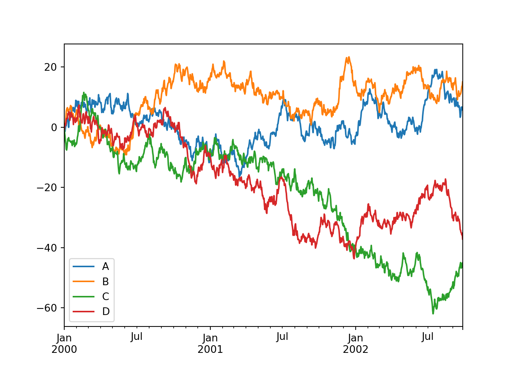

Chapter 13 Pandas : 快速入门
参考材料：
13.1 创建数据集
先导入程序包：
import numpy as np
import pandas as pdpandas 和 NumPy 最本质的区别在于：NumPy 数组对整个数组只有一个 dtype，而 pandas 的 DataFrames 每列都有各自的 dtype。
s = pd.Series([1, 3, 5, np.nan, 6, 8]) # 创建Series
s## 0 1.0
## 1 3.0
## 2 5.0
## 3 NaN
## 4 6.0
## 5 8.0
## dtype: float64dates = pd.date_range("20220101", periods=6) # 创建Series
dates## DatetimeIndex(['2022-01-01', '2022-01-02', '2022-01-03', '2022-01-04',
## '2022-01-05', '2022-01-06'],
## dtype='datetime64[ns]', freq='D')可以通过提供Numpy数组，或者字典来创建DataFrame，每一列都是一个Series。
df = pd.DataFrame(np.random.randint(0,100,size = [6,4]), index=dates, columns=list("ABCD")) # 创建DataFrame
s1 = pd.Series(list(range(6)), index=pd.date_range("20220101", periods=6)) # 创建Series
df["A"] = s1
df## A B C D
## 2022-01-01 0 70 25 34
## 2022-01-02 1 36 21 34
## 2022-01-03 2 56 16 44
## 2022-01-04 3 49 95 97
## 2022-01-05 4 54 90 44
## 2022-01-06 5 19 33 25df2 = pd.DataFrame(
{
"A": list(range(6)),
"B": "foo",
"C": np.linspace(10, 100, 6),
"D": np.random.randn(6)*10,
"E": pd.Categorical(["test", "train", "test", "train", "test", "train"],
categories= ["test", "train"]),
"F": np.random.randint(1,10,6),
"T": pd.date_range("20220101", periods=6)
}
)
df2.set_index('T', inplace=True) # 建立索引并生效
df2## A B C D E F
## T
## 2022-01-01 0 foo 10.0 3.788609 test 1
## 2022-01-02 1 foo 28.0 8.817457 train 8
## 2022-01-03 2 foo 46.0 2.418466 test 7
## 2022-01-04 3 foo 64.0 -4.393500 train 7
## 2022-01-05 4 foo 82.0 2.765258 test 4
## 2022-01-06 5 foo 100.0 -6.680773 train 513.2 数据探查
df.dtypes # 查看各字段类型## A int64
## B int32
## C int32
## D int32
## dtype: objectdf.shape # 查看形状：行数和列数## (6, 4)df.axes # 显示数据行和列名## [DatetimeIndex(['2022-01-01', '2022-01-02', '2022-01-03', '2022-01-04',
## '2022-01-05', '2022-01-06'],
## dtype='datetime64[ns]', freq='D'), Index(['A', 'B', 'C', 'D'], dtype='object')]df.index # 查看索引列/行名## DatetimeIndex(['2022-01-01', '2022-01-02', '2022-01-03', '2022-01-04',
## '2022-01-05', '2022-01-06'],
## dtype='datetime64[ns]', freq='D')df.columns # 列名## Index(['A', 'B', 'C', 'D'], dtype='object')数据整体信息统计：
df.info() # 查看数据类型、索引情况、行列数、各字段数据类型、内存占用等## <class 'pandas.core.frame.DataFrame'>
## DatetimeIndex: 6 entries, 2022-01-01 to 2022-01-06
## Freq: D
## Data columns (total 4 columns):
## # Column Non-Null Count Dtype
## --- ------ -------------- -----
## 0 A 6 non-null int64
## 1 B 6 non-null int32
## 2 C 6 non-null int32
## 3 D 6 non-null int32
## dtypes: int32(3), int64(1)
## memory usage: 168.0 bytesdf.describe() # 查看各数字字段的总数、平均数、标准差、最大最小值和四分位数## A B C D
## count 6.000000 6.000000 6.000000 6.000000
## mean 2.500000 47.333333 46.666667 46.333333
## std 1.870829 17.704990 35.970358 25.835376
## min 0.000000 19.000000 16.000000 25.000000
## 25% 1.250000 39.250000 22.000000 34.000000
## 50% 2.500000 51.500000 29.000000 39.000000
## 75% 3.750000 55.500000 75.750000 44.000000
## max 5.000000 70.000000 95.000000 97.000000数据抽样查看：
n = 5
df.head(n) # 查看 DataFrame 对象的前n行## A B C D
## 2022-01-01 0 70 25 34
## 2022-01-02 1 36 21 34
## 2022-01-03 2 56 16 44
## 2022-01-04 3 49 95 97
## 2022-01-05 4 54 90 44df.tail(n) # 查看 DataFrame 对象的最后n行## A B C D
## 2022-01-02 1 36 21 34
## 2022-01-03 2 56 16 44
## 2022-01-04 3 49 95 97
## 2022-01-05 4 54 90 44
## 2022-01-06 5 19 33 25df.sample(n) # 查看 n 个样本，随机## A B C D
## 2022-01-01 0 70 25 34
## 2022-01-06 5 19 33 25
## 2022-01-02 1 36 21 34
## 2022-01-04 3 49 95 97
## 2022-01-05 4 54 90 4413.3 排序
按索引列排序：
df.sort_index(axis=1, ascending=False)## D C B A
## 2022-01-01 34 25 70 0
## 2022-01-02 34 21 36 1
## 2022-01-03 44 16 56 2
## 2022-01-04 97 95 49 3
## 2022-01-05 44 90 54 4
## 2022-01-06 25 33 19 5按列的取值排序：
df.sort_values(by="D")## A B C D
## 2022-01-06 5 19 33 25
## 2022-01-01 0 70 25 34
## 2022-01-02 1 36 21 34
## 2022-01-03 2 56 16 44
## 2022-01-05 4 54 90 44
## 2022-01-04 3 49 95 9713.4 数据选取
选取列：
df["A"]## 2022-01-01 0
## 2022-01-02 1
## 2022-01-03 2
## 2022-01-04 3
## 2022-01-05 4
## 2022-01-06 5
## Freq: D, Name: A, dtype: int64选择多列：
df[["A", "B"]]## A B
## 2022-01-01 0 70
## 2022-01-02 1 36
## 2022-01-03 2 56
## 2022-01-04 3 49
## 2022-01-05 4 54
## 2022-01-06 5 19df.loc[:, ["A", "B"]]## A B
## 2022-01-01 0 70
## 2022-01-02 1 36
## 2022-01-03 2 56
## 2022-01-04 3 49
## 2022-01-05 4 54
## 2022-01-06 5 19df.loc[x, y] 是一个非常强大的数据选择函数，其中 x 代表行，y 代表列，行和列都支持条件表达式，也支持类似列表那样的切片（如果要用自然索引需要用 df.iloc[]）。
df.iloc[:, 1:3] #筛选第2-3列## B C
## 2022-01-01 70 25
## 2022-01-02 36 21
## 2022-01-03 56 16
## 2022-01-04 49 95
## 2022-01-05 54 90
## 2022-01-06 19 33选取行：
# 用人工索引选取
df[df.index == '2022-01-02'] # 指定索引
# 用自然索引选择，类似列表的切片## A B C D
## 2022-01-02 1 36 21 34df[0:3] # 取前三行,## A B C D
## 2022-01-01 0 70 25 34
## 2022-01-02 1 36 21 34
## 2022-01-03 2 56 16 44df[0:10:2] # 前10行，每两行取一行## A B C D
## 2022-01-01 0 70 25 34
## 2022-01-03 2 56 16 44
## 2022-01-05 4 54 90 44df.iloc[:10,:] # 前10行## A B C D
## 2022-01-01 0 70 25 34
## 2022-01-02 1 36 21 34
## 2022-01-03 2 56 16 44
## 2022-01-04 3 49 95 97
## 2022-01-05 4 54 90 44
## 2022-01-06 5 19 33 25指定行列：
df.loc['2022-01-02', 'A':'C'] # 指定列区间## A 1
## B 36
## C 21
## Name: 2022-01-02 00:00:00, dtype: int64df.loc['2022-01-02':'2022-01-04', 'A':'C'] # 指定行区间## A B C
## 2022-01-02 1 36 21
## 2022-01-03 2 56 16
## 2022-01-04 3 49 95条件选择：
# 单一条件
df[df.A >= 10]## Empty DataFrame
## Columns: [A, B, C, D]
## Index: []df[df.A == 5]## A B C D
## 2022-01-06 5 19 33 25df[df.index == '2022-01-02'] ## A B C D
## 2022-01-02 1 36 21 34df[df['A'].isin([0,4])]
# 组合条件## A B C D
## 2022-01-01 0 70 25 34
## 2022-01-05 4 54 90 44df[(df['A'] >= 2) & (df['B'] > 10)] # and 关系## A B C D
## 2022-01-03 2 56 16 44
## 2022-01-04 3 49 95 97
## 2022-01-05 4 54 90 44
## 2022-01-06 5 19 33 25df[df['B'] > 10].loc[df.A >= 2] # 多重筛选## A B C D
## 2022-01-03 2 56 16 44
## 2022-01-04 3 49 95 97
## 2022-01-05 4 54 90 44
## 2022-01-06 5 19 33 2513.5 新增列和赋值
设置新列会自动按索引对齐数据。
s1 = pd.Series(np.random.randn(6)*20, index=pd.date_range("20220102", periods=6))
s1## 2022-01-02 31.276927
## 2022-01-03 -3.750337
## 2022-01-04 -25.553591
## 2022-01-05 -14.866655
## 2022-01-06 37.745361
## 2022-01-07 0.946590
## Freq: D, dtype: float64df["G"] = s1
df## A B C D G
## 2022-01-01 0 70 25 34 NaN
## 2022-01-02 1 36 21 34 31.276927
## 2022-01-03 2 56 16 44 -3.750337
## 2022-01-04 3 49 95 97 -25.553591
## 2022-01-05 4 54 90 44 -14.866655
## 2022-01-06 5 19 33 25 37.745361df.iat[0, 1] = 0 # Setting values by position
df.loc[:, "G"] = np.array([5] * len(df)) # Setting values by column
df## A B C D G
## 2022-01-01 0 0 25 34 5
## 2022-01-02 1 36 21 34 5
## 2022-01-03 2 56 16 44 5
## 2022-01-04 3 49 95 97 5
## 2022-01-05 4 54 90 44 5
## 2022-01-06 5 19 33 25 513.6 缺失数据
pandas 主要使用值 np.nan 来表示缺失数据。默认情况下，它会在计算中被排除。
dates = pd.date_range("20220101", periods=6)
df1 = df.reindex(index=dates[0:4], columns=list(df.columns) + ["E"])
df1.loc[dates[0] : dates[1], "E"] = 1
df1## A B C D G E
## 2022-01-01 0 0 25 34 5 1.0
## 2022-01-02 1 36 21 34 5 1.0
## 2022-01-03 2 56 16 44 5 NaN
## 2022-01-04 3 49 95 97 5 NaN删除任何有缺失数据的行。
df1.dropna(how="any")## A B C D G E
## 2022-01-01 0 0 25 34 5 1.0
## 2022-01-02 1 36 21 34 5 1.0填充缺失数据。
df1.fillna(value=5)## A B C D G E
## 2022-01-01 0 0 25 34 5 1.0
## 2022-01-02 1 36 21 34 5 1.0
## 2022-01-03 2 56 16 44 5 5.0
## 2022-01-04 3 49 95 97 5 5.0获取值为 nan 的布尔掩码。
pd.isna(df1)## A B C D G E
## 2022-01-01 False False False False False False
## 2022-01-02 False False False False False False
## 2022-01-03 False False False False False True
## 2022-01-04 False False False False False True13.7 数据运算
13.7.1 Stats
df.mean() # 返回所有列的均值## A 2.500000
## B 35.666667
## C 46.666667
## D 46.333333
## G 5.000000
## dtype: float64df.mean(1) # 返回所有行的均值，下同## 2022-01-01 12.8
## 2022-01-02 19.4
## 2022-01-03 24.6
## 2022-01-04 49.8
## 2022-01-05 39.4
## 2022-01-06 17.4
## Freq: D, dtype: float64df.corr() # 返回列与列之间的相关系数## A B C D G
## A 1.000000 0.340994 0.484439 0.078620 NaN
## B 0.340994 1.000000 0.451457 0.478781 NaN
## C 0.484439 0.451457 1.000000 0.709058 NaN
## D 0.078620 0.478781 0.709058 1.000000 NaN
## G NaN NaN NaN NaN NaNdf.count() # 返回每一列中的非空值的个数## A 6
## B 6
## C 6
## D 6
## G 6
## dtype: int64df.max() # 返回每一列的最大值## A 5
## B 56
## C 95
## D 97
## G 5
## dtype: int64df.min() # 返回每一列的最小值## A 0
## B 0
## C 16
## D 25
## G 5
## dtype: int64df.median() # 返回每一列的中位数## A 2.5
## B 42.5
## C 29.0
## D 39.0
## G 5.0
## dtype: float64df.std() # 返回每一列的标准差## A 1.870829
## B 22.259081
## C 35.970358
## D 25.835376
## G 0.000000
## dtype: float64df.var() # 方差## A 3.500000
## B 495.466667
## C 1293.866667
## D 667.466667
## G 0.000000
## dtype: float6413.7.2 Apply
df1 = df.drop("G", axis = 1) #删除列
df1.apply(np.cumsum)## A B C D
## 2022-01-01 0 0 25 34
## 2022-01-02 1 36 46 68
## 2022-01-03 3 92 62 112
## 2022-01-04 6 141 157 209
## 2022-01-05 10 195 247 253
## 2022-01-06 15 214 280 278df1.apply(lambda x: x.max() - x.min())## A 5
## B 56
## C 79
## D 72
## dtype: int6413.8 合并
详细介绍参考：Merge, join, concatenate and compare。
13.8.1 Concat
pandas 提供了各种拼接/合并操作的工具，可以将 Series 和 DataFrame 对象通过索引各种集合逻辑运算，以及关系代数功能组合在一起。
df = pd.DataFrame(np.random.randn(10, 4))
df
# break it into pieces## 0 1 2 3
## 0 1.973093 -1.238221 -0.280016 -0.329126
## 1 0.833394 -0.535324 -1.508450 2.934675
## 2 0.752057 -0.869248 2.003063 0.263144
## 3 0.039671 -1.006296 -0.001292 0.675347
## 4 1.153403 0.763585 0.643979 -0.049433
## 5 -0.446896 -0.515047 -1.765336 -0.371483
## 6 -1.948581 0.224357 -0.705617 -0.704188
## 7 -2.145592 -0.525338 0.018647 1.725788
## 8 -0.288090 -1.941979 -0.068297 -0.425025
## 9 -0.310528 -0.464376 -0.582539 0.366545pieces = [df[:3], df[3:7], df[7:]]
pd.concat(pieces)## 0 1 2 3
## 0 1.973093 -1.238221 -0.280016 -0.329126
## 1 0.833394 -0.535324 -1.508450 2.934675
## 2 0.752057 -0.869248 2.003063 0.263144
## 3 0.039671 -1.006296 -0.001292 0.675347
## 4 1.153403 0.763585 0.643979 -0.049433
## 5 -0.446896 -0.515047 -1.765336 -0.371483
## 6 -1.948581 0.224357 -0.705617 -0.704188
## 7 -2.145592 -0.525338 0.018647 1.725788
## 8 -0.288090 -1.941979 -0.068297 -0.425025
## 9 -0.310528 -0.464376 -0.582539 0.36654513.8.2 Join
pandas 提供了一个函数merge()，作为 DataFrame 或命名 Series 对象之间所有标准数据库join操作的入口：
left = pd.DataFrame({"key": ["foo", "foo"], "lval": [1, 2]})
left## key lval
## 0 foo 1
## 1 foo 2right = pd.DataFrame({"key": ["foo", "foo"], "rval": [4, 5]})
right## key rval
## 0 foo 4
## 1 foo 5pd.merge(left, right, on="key")## key lval rval
## 0 foo 1 4
## 1 foo 1 5
## 2 foo 2 4
## 3 foo 2 513.9 分组聚合
详细介绍参考：Grouping section.
分组聚合包含以下三步：
- Splitting the data into groups based on some criteria
- Applying a function to each group independently
- Combining the results into a data structure
df = pd.DataFrame(
{
"A": ["foo", "bar", "foo", "bar", "foo", "bar", "foo", "foo"],
"B": ["one", "one", "two", "three", "two", "two", "one", "three"],
"C": np.random.randn(8),
"D": np.random.randn(8),
}
)
df## A B C D
## 0 foo one 0.001399 -1.217181
## 1 bar one -1.783354 0.198889
## 2 foo two -0.092097 -0.605007
## 3 bar three -0.979826 0.200944
## 4 foo two -0.166814 0.430878
## 5 bar two 0.114435 -0.279532
## 6 foo one 0.765105 0.719586
## 7 foo three 0.688699 0.560420df.groupby("A").sum()## C D
## A
## bar -2.648745 0.120301
## foo 1.196293 -0.111303df.groupby(["A", "B"]).sum()## C D
## A B
## bar one -1.783354 0.198889
## three -0.979826 0.200944
## two 0.114435 -0.279532
## foo one 0.766504 -0.497595
## three 0.688699 0.560420
## two -0.258911 -0.17412813.10 重塑
13.10.1 Stack
tuples = list(zip(["bar", "bar", "baz", "baz", "foo", "foo", "qux", "qux"],
["one", "two", "one", "two", "one", "two", "one", "two"]))
index = pd.MultiIndex.from_tuples(tuples, names=["first", "second"])
df = pd.DataFrame(np.random.randn(8, 2), index=index, columns=["A", "B"])
df2 = df[:4]
df2## A B
## first second
## bar one -0.180548 0.392982
## two -0.406530 -0.829536
## baz one -0.383026 -0.090282
## two -1.791530 -0.625630stack() 方法在 DataFrame 中压缩一个列。
stacked = df2.stack()
stacked## first second
## bar one A -0.180548
## B 0.392982
## two A -0.406530
## B -0.829536
## baz one A -0.383026
## B -0.090282
## two A -1.791530
## B -0.625630
## dtype: float64stacked.unstack()## A B
## first second
## bar one -0.180548 0.392982
## two -0.406530 -0.829536
## baz one -0.383026 -0.090282
## two -1.791530 -0.62563013.10.2 数据透视表（Pivot Table）
df = pd.DataFrame(
{
"A": ["one", "one", "two", "three"] * 3,
"B": ["A", "B", "C"] * 4,
"C": ["foo", "foo", "foo", "bar", "bar", "bar"] * 2,
"D": np.random.randn(12),
"E": np.random.randn(12),
}
)
df## A B C D E
## 0 one A foo -0.182847 -0.304866
## 1 one B foo -0.291650 -0.557217
## 2 two C foo -2.123105 1.754715
## 3 three A bar 0.012049 0.846439
## 4 one B bar -0.228127 0.130376
## 5 one C bar 2.713387 0.178382
## 6 two A foo 0.310421 -0.086026
## 7 three B foo 0.416409 -0.873558
## 8 one C foo 0.825030 1.237884
## 9 one A bar 0.419418 -0.217342
## 10 two B bar 0.656731 -0.563454
## 11 three C bar 0.217036 0.758217pd.pivot_table(df, values="D", index=["A", "B"], columns=["C"])## C bar foo
## A B
## one A 0.419418 -0.182847
## B -0.228127 -0.291650
## C 2.713387 0.825030
## three A 0.012049 NaN
## B NaN 0.416409
## C 0.217036 NaN
## two A NaN 0.310421
## B 0.656731 NaN
## C NaN -2.12310513.11 时间序列
pandas 具有简单、强大、高效的在变频期间进行重采样操作的功能。
rng = pd.date_range("1/1/2012", periods=100, freq="S")
ts = pd.Series(np.random.randint(0, 500, len(rng)), index=rng)
ts.resample("5Min").sum()## 2012-01-01 26388
## Freq: 5T, dtype: int32rng = pd.date_range("3/6/2012 00:00", periods=5, freq="D")
ts = pd.Series(np.random.randn(len(rng)), rng)
ts## 2012-03-06 1.546947
## 2012-03-07 -1.370631
## 2012-03-08 1.366896
## 2012-03-09 0.375559
## 2012-03-10 -0.382019
## Freq: D, dtype: float64ts_utc = ts.tz_localize("UTC")
ts_utc## 2012-03-06 00:00:00+00:00 1.546947
## 2012-03-07 00:00:00+00:00 -1.370631
## 2012-03-08 00:00:00+00:00 1.366896
## 2012-03-09 00:00:00+00:00 0.375559
## 2012-03-10 00:00:00+00:00 -0.382019
## Freq: D, dtype: float64在时间跨度表示之间转换：
rng = pd.date_range("1/1/2012", periods=5, freq="M")
ts = pd.Series(np.random.randn(len(rng)), index=rng)
ts## 2012-01-31 -0.472547
## 2012-02-29 0.115447
## 2012-03-31 1.284450
## 2012-04-30 0.265812
## 2012-05-31 1.204157
## Freq: M, dtype: float64ps = ts.to_period()
ps## 2012-01 -0.472547
## 2012-02 0.115447
## 2012-03 1.284450
## 2012-04 0.265812
## 2012-05 1.204157
## Freq: M, dtype: float64ps.to_timestamp()## 2012-01-01 -0.472547
## 2012-02-01 0.115447
## 2012-03-01 1.284450
## 2012-04-01 0.265812
## 2012-05-01 1.204157
## Freq: MS, dtype: float6413.12 分类变量
df = pd.DataFrame(
{"id": [1, 2, 3, 4, 5, 6], "raw_grade": ["a", "b", "b", "a", "a", "e"]}
)
df["grade"] = df["raw_grade"].astype("category")
df["grade"]## 0 a
## 1 b
## 2 b
## 3 a
## 4 a
## 5 e
## Name: grade, dtype: category
## Categories (3, object): ['a', 'b', 'e']# Rename the categories to more meaningful names
df["grade"].cat.categories = ["very good", "good", "very bad"]# Reorder the categories and simultaneously add the missing categories
df["grade"] = df["grade"].cat.set_categories(
["very bad", "bad", "medium", "good", "very good"]
)
df["grade"]## 0 very good
## 1 good
## 2 good
## 3 very good
## 4 very good
## 5 very bad
## Name: grade, dtype: category
## Categories (5, object): ['very bad', 'bad', 'medium', 'good', 'very good']df.sort_values(by="grade")## id raw_grade grade
## 5 6 e very bad
## 1 2 b good
## 2 3 b good
## 0 1 a very good
## 3 4 a very good
## 4 5 a very gooddf.groupby("grade").size()## grade
## very bad 1
## bad 0
## medium 0
## good 2
## very good 3
## dtype: int6413.13 作图
import matplotlib.pyplot as plt
ts = pd.Series(np.random.randn(1000), index=pd.date_range("1/1/2000", periods=1000))
ts = ts.cumsum()
ts.plot()df = pd.DataFrame(
np.random.randn(1000, 4), index=ts.index, columns=["A", "B", "C", "D"]
)
df = df.cumsum()
plt.figure()
df.plot()
plt.legend(loc='best')
13.14 数据读写

使用 read_* 函数读取数据：
import pandas as pd
titanic = pd.read_csv("data/titanic.csv")
titanic.head(6)## PassengerId Survived Pclass ... Fare Cabin Embarked
## 0 1 0 3 ... 7.2500 NaN S
## 1 2 1 1 ... 71.2833 C85 C
## 2 3 1 3 ... 7.9250 NaN S
## 3 4 1 1 ... 53.1000 C123 S
## 4 5 0 3 ... 8.0500 NaN S
## 5 6 0 3 ... 8.4583 NaN Q
##
## [6 rows x 12 columns]可以选择要读取的列：
titanic = pd.read_table('data/titanic.txt', usecols=['PassengerId','Survived','Pclass', 'Sex','Age'])从其他文件格式读取：
titanic = pd.read_excel("data/titanic.xlsx")
titanic = pd.read_table('data/titanic.txt', sep='\t')titanic.dtypes## PassengerId int64
## Survived int64
## Pclass int64
## Sex object
## Age float64
## dtype: objecttitanic.info()## <class 'pandas.core.frame.DataFrame'>
## RangeIndex: 891 entries, 0 to 890
## Data columns (total 5 columns):
## # Column Non-Null Count Dtype
## --- ------ -------------- -----
## 0 PassengerId 891 non-null int64
## 1 Survived 891 non-null int64
## 2 Pclass 891 non-null int64
## 3 Sex 891 non-null object
## 4 Age 714 non-null float64
## dtypes: float64(1), int64(3), object(1)
## memory usage: 34.9+ KB使用 to_* 方法导出数据：
titanic.to_excel("data/titanic.xlsx", index=False)
titanic.to_csv('data/titanic.txt', sep='\t', index=False)